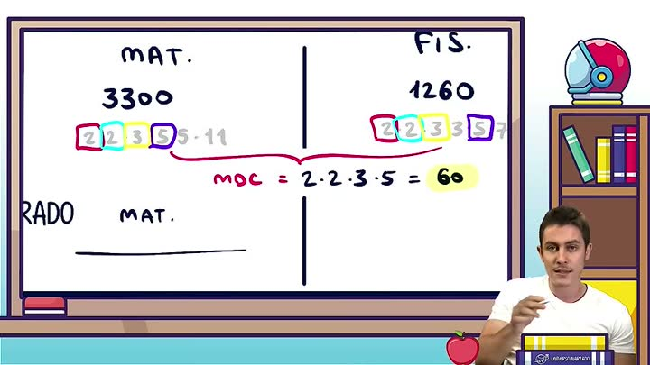
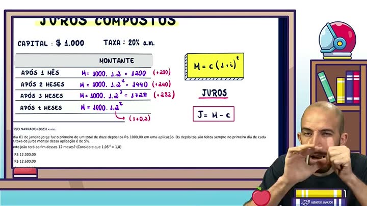
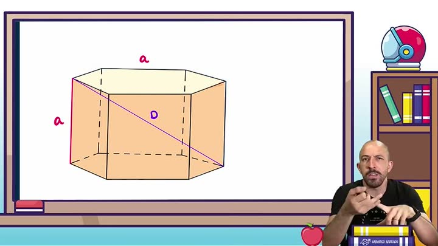
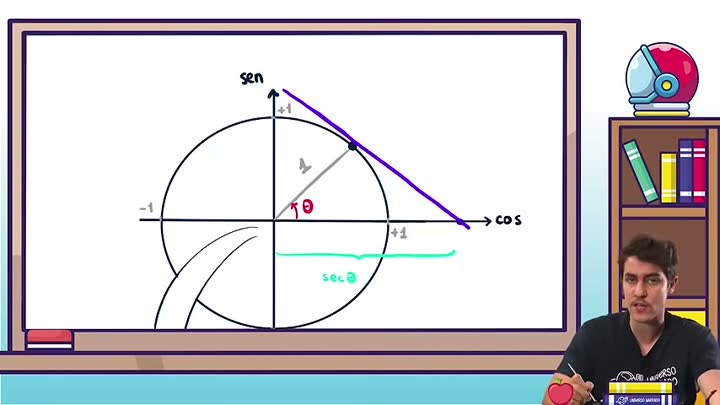
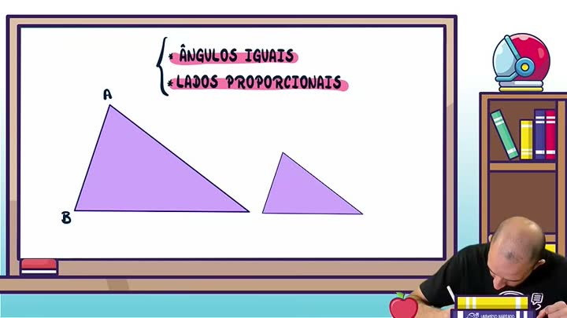
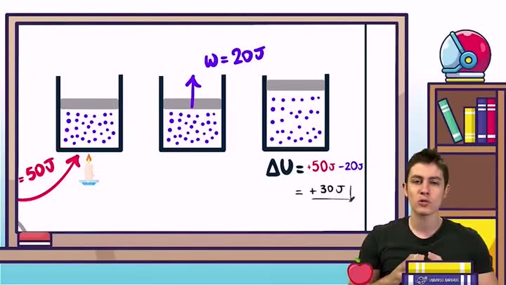
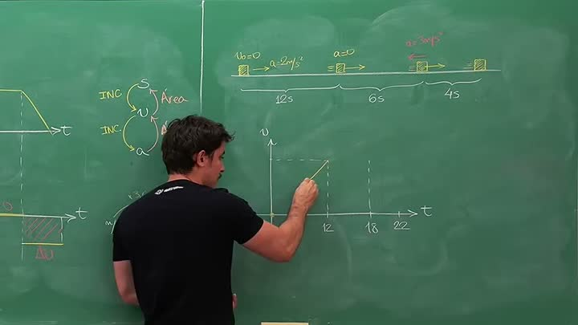
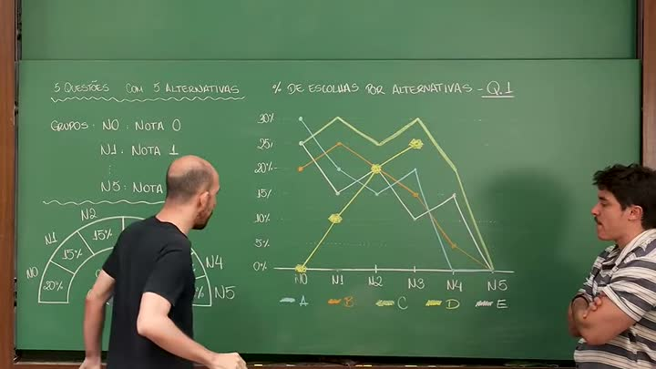

<title>Quadro do Universo</title>
<meta name="claude:viewport-fit-sides" content="cover">
<link rel="stylesheet" href="https://fonts.googleapis.com/css2?family=Jersey+10&family=Nunito:wght@400;600;800&display=swap">
<style>
/* Layout: uma coluna de "quadros" empilhados, cada um com borda de pixel; verde de lousa + caneta amarela. */
:root {
  --bg: #f1f5ef;
  --card: #ffffff;
  --fg: #16241d;
  --muted: #4d6357;
  --ink: #2c5a47;
  --mark: #f0cc2e;
  --line: #16241d;
  --soft: #dce8e0;
  --ok: #2c7d4d;
  --mid: #d6a91c;
  --bad: #b8412e;
  --f-title: "Jersey 10", "Courier New", monospace;
  --f-body: "Nunito", system-ui, sans-serif;
}
@media (prefers-color-scheme: dark) {
  :root:not([data-theme="light"]) {
    --bg: #0f1b16; --card: #172920; --fg: #e8f1ea; --muted: #a4b9ac; --ink: #8fd1ae;
    --line: #e8f1ea; --soft: #213a2e; --ok: #5fc486; --mid: #e2b92e; --bad: #e07a66;
    color-scheme: dark;
  }
}
:root[data-theme="dark"] {
  --bg: #0f1b16; --card: #172920; --fg: #e8f1ea; --muted: #a4b9ac; --ink: #8fd1ae;
  --line: #e8f1ea; --soft: #213a2e; --ok: #5fc486; --mid: #e2b92e; --bad: #e07a66;
  color-scheme: dark;
}
* { box-sizing: border-box; }
body {
  background: var(--bg); color: var(--fg); font-family: var(--f-body); font-size: 17px; line-height: 1.5;
  padding-block: 28px 64px;
  padding-left: max(16px, env(safe-area-inset-left, 0px));
  padding-right: max(16px, env(safe-area-inset-right, 0px));
}
main { max-width: 880px; margin: 0 auto; display: flex; flex-direction: column; gap: 36px; }
h1, h2 { font-family: var(--f-title); font-weight: 400; line-height: 1; margin: 0; text-wrap: balance; letter-spacing: .02em; }
h1 { font-size: clamp(44px, 9vw, 72px); }
h2 { font-size: clamp(30px, 6vw, 40px); }
p { margin: 0; max-width: 65ch; }
.lead { font-size: 19px; color: var(--muted); }
.mark { background: linear-gradient(transparent 55%, var(--mark) 55%); padding: 0 2px; }

/* borda de pixel: 4 sombras sem desfoque recortam os cantos */
.px {
  background: var(--card); margin: 4px; padding: 22px;
  box-shadow: 0 -4px 0 0 var(--line), 0 4px 0 0 var(--line), -4px 0 0 0 var(--line), 4px 0 0 0 var(--line);
}
.px > * + * { margin-top: 14px; }
section { min-width: 0; }
.eyebrow { font-weight: 800; font-size: 13px; letter-spacing: .12em; text-transform: uppercase; color: var(--ink); }

.nums { display: grid; grid-template-columns: repeat(auto-fit, minmax(150px, 1fr)); gap: 14px; }
.nums div { background: var(--soft); padding: 12px 14px; }
.nums b { display: block; font-family: var(--f-title); font-weight: 400; font-size: 40px; line-height: 1; font-variant-numeric: tabular-nums; }
.nums span { font-size: 14px; color: var(--muted); }

.fotos { display: grid; grid-template-columns: repeat(auto-fit, minmax(260px, 1fr)); gap: 18px; }
figure { margin: 0; min-width: 0; }
figure img { display: block; width: 100%; height: auto; image-rendering: auto;
  box-shadow: 0 -3px 0 0 var(--line), 0 3px 0 0 var(--line), -3px 0 0 0 var(--line), 3px 0 0 0 var(--line); }
figcaption { font-size: 15px; color: var(--muted); margin-top: 10px; }
figcaption b { color: var(--fg); }

.traços { display: grid; grid-template-columns: repeat(auto-fit, minmax(190px, 1fr)); gap: 12px; padding: 0; margin: 0; list-style: none; }
.traços li { background: var(--soft); padding: 12px 14px; font-size: 15.5px; }
.traços li b { display: block; font-family: var(--f-title); font-weight: 400; font-size: 24px; line-height: 1.1; }

.grade { display: grid; grid-template-columns: repeat(21, 1fr); gap: 3px; max-width: 560px; }
.grade i { aspect-ratio: 1; display: block; }
.grade .s { background: var(--ok); } .grade .p { background: var(--mid); } .grade .n { background: var(--bad); }
.legenda { display: flex; flex-wrap: wrap; gap: 6px 18px; font-size: 15px; }
.legenda span::before { content: ""; display: inline-block; width: 12px; height: 12px; margin-right: 7px; vertical-align: -1px; }
.legenda .s::before { background: var(--ok); } .legenda .p::before { background: var(--mid); } .legenda .n::before { background: var(--bad); }
.cols { display: grid; grid-template-columns: repeat(auto-fit, minmax(240px, 1fr)); gap: 18px; }
.cols h3, .px h3 { font-family: var(--f-title); font-weight: 400; font-size: 24px; margin: 0 0 6px; line-height: 1.1; }
ul.l, ol.l { margin: 0; padding-left: 20px; } ul.l li, ol.l li { margin: 4px 0; }

.tab { overflow-x: auto; }
table { border-collapse: collapse; width: 100%; min-width: 560px; font-size: 15.5px; }
th, td { text-align: left; vertical-align: top; padding: 9px 12px; border-bottom: 2px solid var(--soft); }
th { font-family: var(--f-title); font-weight: 400; font-size: 21px; }
@media (max-width: 640px) {
  table, thead, tbody, tr, td { display: block; min-width: 0; width: 100%; }
  thead { display: none; }
  tr { padding: 10px 0; border-bottom: 2px solid var(--soft); }
  td { border: 0; padding: 4px 0; }
  td:nth-child(1)::before { content: "O que apareceu"; display: block; font-family: var(--f-title); font-size: 19px; color: var(--ink); }
  td:nth-child(2)::before { content: "Trava"; display: block; font-family: var(--f-title); font-size: 19px; color: var(--ink); }
  .px { padding: 16px; }
}
small, .nota { color: var(--muted); font-size: 14.5px; }
code { font-size: 14px; background: var(--soft); padding: 1px 5px; }
.opcoes { display: grid; grid-template-columns: repeat(auto-fit, minmax(240px, 1fr)); gap: 16px; }
.opcoes div { background: var(--soft); padding: 14px 16px; }
.opcoes b { font-family: var(--f-title); font-weight: 400; font-size: 24px; display: block; }
</style>

<main>
  <header>
    <p class="eyebrow">Universo Narrado × PrepEnem · 20/11/2026</p>
    <h1>Quadro do <span class="mark">Universo</span></h1>
    <p class="lead">Como eles explicam, o que o nosso site ainda não faz igual e o que eu fiz para não repetir os erros de hoje.</p>
  </header>

  <section class="px">
    <div class="nums">
      <div><b>9</b><span>vídeos transcritos</span></div>
      <div><b>844 mil</b><span>palavras de legenda</span></div>
      <div><b>393</b><span>fotos de quadro</span></div>
      <div><b>29</b><span>resumos de “como ele ensina”</span></div>
    </div>
    <p class="nota">Legenda automática do YouTube em português (tem erro, veja “Avisos”). Matemática 28 h, Física 14 h, FUVEST 12 h, Trigonometria 11 h, Cinemática 8 h, simulado, questões difíceis e 2 vídeos curtos.</p>
  </section>

  <section class="px">
    <p class="eyebrow">Como eles ensinam</p>
    <h2>O desenho vem antes da conta</h2>
    <ul class="traços">
      <li><b>Cor por fator</b>cada número primo numa caixinha de cor, até o MMC aparecer sozinho.</li>
      <li><b>Caixa amarela</b>a regra do dia fica marcada, como na semelhança de triângulos.</li>
      <li><b>Tabela que cresce</b>juros: uma linha por mês, a fórmula nasce da tabela.</li>
      <li><b>Figura primeiro</b>geometria começa pelo sólido e pela diagonal, depois vêm as letras.</li>
    </ul>
    <div class="fotos">
      <figure><figcaption><b>MMC:</b> 3300 e 1260 fatorados, cada fator numa cor, MMC = 2·2·3·5 = 60.</figcaption></figure>
      <figure><figcaption><b>Juros compostos:</b> capital 1.000, taxa 20% ao mês; a tabela vira M = C(1+i)ᵗ.</figcaption></figure>
      <figure><figcaption><b>Prisma:</b> a diagonal D aparece desenhada antes de qualquer fórmula.</figcaption></figure>
      <figure><figcaption><b>Círculo trigonométrico:</b> o ângulo θ e os eixos seno e cosseno, desenhados ao vivo.</figcaption></figure>
      <figure><figcaption><b>Semelhança:</b> “ângulos iguais, lados proporcionais” na caixa amarela, dois triângulos ao lado.</figcaption></figure>
      <figure><figcaption><b>Termodinâmica:</b> êmbolo com partículas; ΔU = 50 J − 20 J = +30 J escrito ao lado.</figcaption></figure>
    </div>
  </section>

  <section class="px">
    <p class="eyebrow">Nível acima</p>
    <h2>O quadro verde: FUVEST e questões difíceis</h2>
    <p>Nos vídeos mais pesados o cenário muda para lousa verde e giz, com 2 professores. É o “peso de 20 kg”: treinar no difícil faz o ENEM parecer leve.</p>
    <div class="fotos">
      <figure><figcaption><b>Cinemática:</b> gráfico v × t desenhado à mão; trem em 3 trechos, a distância é a área.</figcaption></figure>
      <figure><figcaption><b>ENEM 2026, “mais difícil”:</b> gráfico com uma curva por alternativa e grupos N0 a N5.</figcaption></figure>
    </div>
    <ul class="l">
      <li>Sinuca do ENEM 2026: junta reflexão (física), semelhança e sistema de equações numa questão só.</li>
      <li>Cinemática: ler gráfico de posição só pela inclinação, sem conta.</li>
      <li>Trem em 3 trechos: somar 3 áreas no v × t (144 + 144 + 72 = 360 m; conta minha, marcada com ?).</li>
    </ul>
    <p class="nota">Ainda não virou aula no site; é a ideia de degrau acima do ENEM, em aberto.</p>
  </section>

  <section class="px">
    <p class="eyebrow">Nossas aulas × as deles</p>
    <h2>3 batem, 11 em parte, 7 não</h2>
    <div class="grade" role="img" aria-label="21 temas: 3 batem, 11 em parte, 7 não batem">
      <i class="s"></i><i class="s"></i><i class="s"></i>
      <i class="p"></i><i class="p"></i><i class="p"></i><i class="p"></i><i class="p"></i><i class="p"></i><i class="p"></i><i class="p"></i><i class="p"></i><i class="p"></i><i class="p"></i>
      <i class="n"></i><i class="n"></i><i class="n"></i><i class="n"></i><i class="n"></i><i class="n"></i><i class="n"></i>
    </div>
    <div class="legenda"><span class="s">3 batem</span><span class="p">11 em parte</span><span class="n">7 não batem</span></div>
    <div class="cols">
      <div><h3>Batem</h3><p>Função afim, PA × PG, geometria analítica.</p></div>
      <div><h3>Não batem</h3><p>MMC e MDC, escalas, função do 2º grau, juros, combinatória e probabilidade, energia e hidrostática, óptica.</p></div>
    </div>
    <h3>As 5 mudanças que mais valem</h3>
    <ol class="l">
      <li><b>Combinatória + probabilidade:</b> 9,5% das questões e nenhuma aula.</li>
      <li><b>Porcentagem como fator</b> (1,2 e 0,8 na equação): 19% das questões.</li>
      <li><b>Grandezas:</b> razão constante e gráfico reta × hipérbole (12%).</li>
      <li><b>Parábola sem decorar:</b> o graveto de 1 m (10,8%).</li>
      <li><b>Circuitos:</b> de onde vem P = U × i (5,6%).</li>
    </ol>
    <p class="nota">Pesos vêm de <code>o-que-mais-cai.json</code> (ENEM 2009–2023). Geometria e exponencial foram comparadas só pelo começo do capítulo; marcadas com “?” no documento completo.</p>
  </section>

  <section class="px">
    <p class="eyebrow">Avisos</p>
    <h2>O que deu errado e a trava que criei</h2>
    <div class="tab">
      <table>
        <thead><tr><th>O que apareceu</th><th>Trava</th></tr></thead>
        <tbody>
          <tr><td>Legenda errou conta: “a₅ = W⁴” no lugar de W·Q⁴; “15.000 e 51” no lugar de 15.151.</td><td>Número só vai para o site depois de conferido no quadro ou refeito a conta, e passa pelo revisor de fatos.</td></tr>
          <tr><td>Chuveiro 600 Ω × 300 Ω e 1 cal = 4 ou 4,2 J: o vídeo se contradiz na legenda.</td><td>Fica marcado com “?” até eu conferir na foto.</td></tr>
          <tr><td>O comparador só leu o começo de 3 blocos (frações, geometria, seno).</td><td>Todo agente entrega tabela de cobertura; “só li o começo” volta para uma 2ª leitura.</td></tr>
          <tr><td>Contei de cabeça: “17 de 21” eram 18, “12 vídeos” eram 9.</td><td>Número vem de comando (<code>grep -c</code>, <code>wc -l</code>), regra gravada nas lições.</td></tr>
          <tr><td>35 fotos saíram do vídeo errado e 13 de 16 lotes acharam 0 quadros.</td><td>O script guarda o vídeo de cada seção e avisa “ATENÇÃO: 0 horários”.</td></tr>
          <tr><td>Comando comprido barrado pelo guarda; instruções criadas depois do agente.</td><td>Script em arquivo; arquivo de instruções antes de chamar o agente.</td></tr>
        </tbody>
      </table>
    </div>
    <p class="nota">Gravado em <code>transcrever-universo-narrado</code> (skill do projeto) e em <code>licoes.md</code>.</p>
    <p class="nota"><b>Sobre transcrever sem erro:</b> usei a legenda do próprio YouTube. Whisper no computador levaria dias (4 núcleos, sem placa de vídeo) e a cota grátis do Gemini é 20 pedidos por dia. Não testei nenhum dos dois; a trava acima cobre o erro.</p>
  </section>

  <section class="px">
    <p class="eyebrow">Para o seu estudo</p>
    <h2>Dicas do vídeo “Estudar menos, notas altas”</h2>
    <div class="cols">
      <div><h3>1. Puxar da memória</h3><p>Fecha o caderno e refaz a fórmula do zero. Travou, consulta e tenta de novo. Depois joga o papel fora. Tempo citado: 10 a 15 minutos.</p></div>
      <div><h3>2. Espaçar</h3><p>Refaz de novo em 1 semana, 15, 20 e 30 dias. Imagem do vídeo: não regar 10 litros de uma vez.</p></div>
      <div><h3>3. Entender antes</h3><p>Responder: de onde vem, para que serve, como se aplica. Depois explicar a alguém.</p></div>
    </div>
    <p><b>Resolver em 3 segundos:</b> em (x+1)(x+2) = 30, procure dois números seguidos que multiplicam 30. Dá 5 × 6, então x = 4. Também vale (−6)(−5), então x = −7. Só funciona se o número se fatora em dois seguidos; senão, Bhaskara.</p>
    <p class="nota">O vídeo não fala de TDAH; as dicas são só o que ele diz.</p>
  </section>

  <section class="px">
    <p class="eyebrow">Próximo</p>
    <h2>Duas opções</h2>
    <div class="opcoes">
      <div><b>1. Recomendo</b>Eu faço a aula de Combinatória + Probabilidade no jeito deles e mostro uma amostra antes das outras.</div>
      <div><b>2. Você escolhe</b>Abre o documento completo e diz a ordem das 10 mudanças.</div>
    </div>
    <p class="nota">Fotos, resumos e scripts estão em <code>docs/universo-narrado/</code> no projeto.</p>
  </section>
</main>
